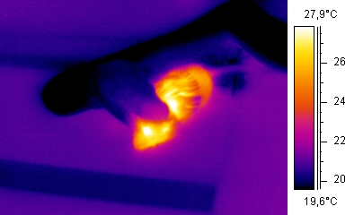

Alles zu schlangen
Schlangen sind eine Unterordnung der Schuppenkriechtiere und stammen von
echsenartigen Vorfahren ab.
Heute sind rund 3500 Arten beschrieben. Sie sind weltweit in allen Lebensräumen anzutreffen.
Jedoch nicht überall zb. Arktis, Antarktis und einigen Inseln
Schlangen spielen in der Kulturgeschichte und Mythologie und auch in der
Kunst und Literatur eine große Rolle. (zb. in der Bibel mit Adam und Eva oder die Medusa)
Der von einer Schlange umschlingte Stab des Asklepios Stab des Asklepios in der griechischen Mythologie
ist bis heute das Symbol der Medizin
Schlangen bringen die Jungtiere mit Eiern und Lebendig zu Welt.

Eigenschaften
Schlangen besitzen alle einen langgezogenen und dünnen Körper, sie haben dazu keine Gliedmassen.
Die Körperform kann von Art zu Art stark unterscheiden.
Die Grösse kann bei ausgewachsenen auch stark unterschieden, von 10 Zentimeter bis 7 Meter.
Die Schuppen der Schlangen haben eine unendliche Zahl von Farb- und Zeichenvariationen (zb. einfarbig,
Streifen oder bis zu komplexen Farbkombinationen)
Ungiftige Arten können auch wie giftige aussehen um Gegner zu verwirren und sich selber zu schützen.
Die Haut(Schuppen) schützt die Schlange vor Umwelt Einwirkungen, sie hat zudem nerven in der darunter.
Schlangen häten sich(alte Hornschicht erneuern) Komplet, sie versucht die Hornhaut an spitzen Steinen und anderem
ab zu streifen.
Da die Schlangen den Mund weit öffnen können, können sie auch grössere Tiere verschlingen
Zudem besitzen die giftigen zwei Giftzähne am oberen Kiffer.
Sie haben vier verschiedene Arten der vortbewegung.
1. Schlängeln sie windet sich hin und her
2. Ziehharmonika kriechen sie streckt die vordere hälfte nach vorn und zieht den Rest nach.
3. Seitenwinden sie verankert Kopf und Schwanz am Boden und wirft dann den mittleren Teil seitlich nach vorne.
4. Raupenbewegung Sie schiebt und zieht sich gerade nach vorne.
Schlangen haben zwei Arten bei der Tötung der Gegner. Vergiften oder Erwürgen
Schlangen sind Kaltblüter das heisst sie müssen sich aufwärmen und haben keine konstante körpertemperatur
Sinnesorgane
Gerüche nehmen sie über die Nase und gespaltene Zunge auf. Sie können mit der Zunge zudem räumliche Informationen gewinnen.
Sie besitzen zudem ein Infrarot Wahrnehmung Organ(Grubenorgan)
